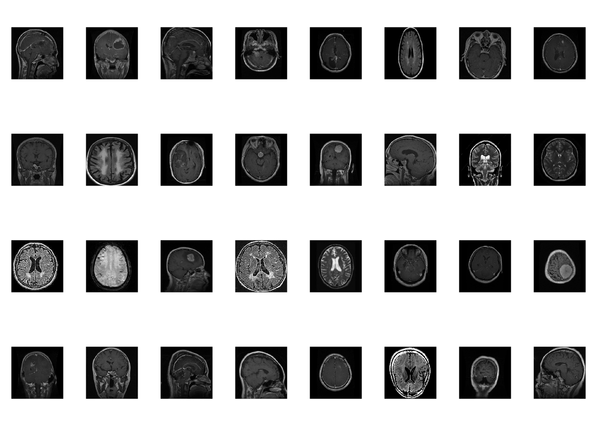
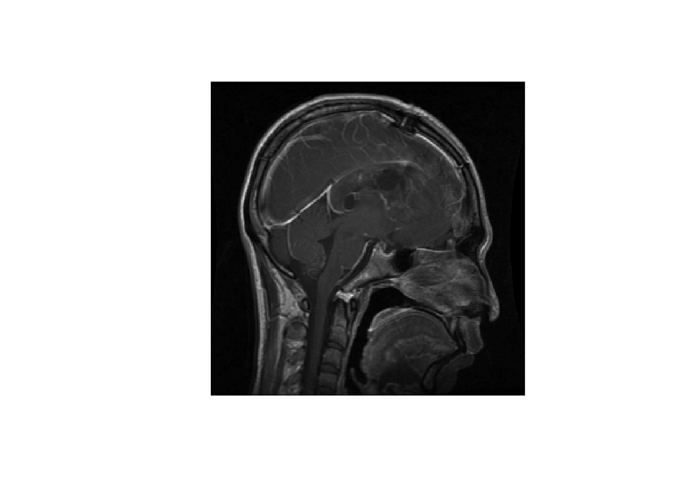
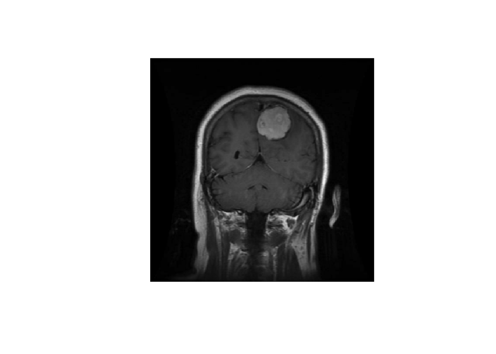
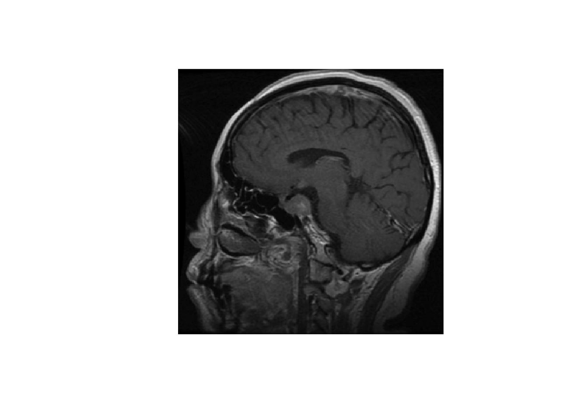
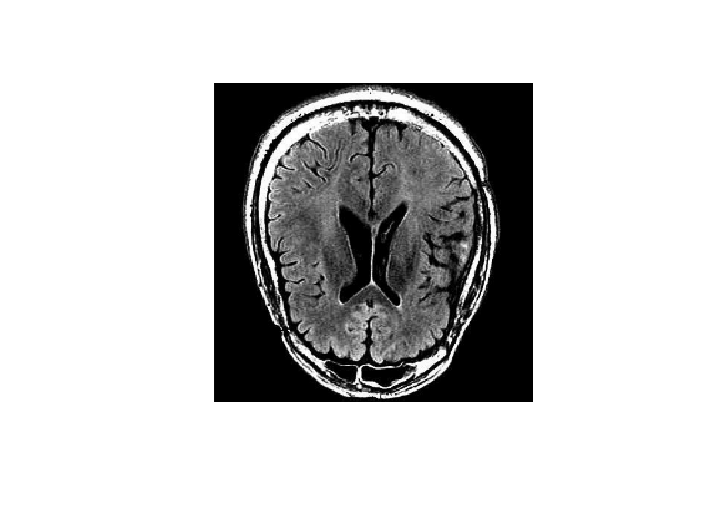

Worldwide 300,000 people are diagnosed with brain tumors annually with nearly one-third of these cases being cancerous. These characteristics immediately make brain tumors a pressing issue, however brain tumors are very diverse thus would require extensive scans to diagnose specific brain tumor types. This is where image classification comes in, specifically we will be applying a convolutional neural network model. A CNN model strengths lie in it’s ability to identify patterns in images and extract features from data which is great for identifying specific brain tumors. In our case, we will be dealing with the three most common types, glioma, meningioma, and pituitary tumors as well as no tumor cases. The data set we will be using contains 7023 MRI images all classified in one of the four classes. With the use of artificial intelligence it could lead to faster detections, personalized treatments, and improved planning.
# packageslibrary(tidyverse)
── Attaching core tidyverse packages ──────────────────────── tidyverse 2.0.0 ──
✔ dplyr 1.1.4 ✔ readr 2.1.4
✔ forcats 1.0.0 ✔ stringr 1.5.0
✔ ggplot2 3.5.1 ✔ tibble 3.2.1
✔ lubridate 1.9.2 ✔ tidyr 1.3.1
✔ purrr 1.0.2
── Conflicts ────────────────────────────────────────── tidyverse_conflicts() ──
✖ dplyr::filter() masks stats::filter()
✖ dplyr::lag() masks stats::lag()
ℹ Use the conflicted package (<http://conflicted.r-lib.org/>) to force all conflicts to become errors
library(tensorflow)library(keras3)
Warning: package 'keras3' was built under R version 4.3.3
Attaching package: 'keras3'
The following objects are masked from 'package:tensorflow':
set_random_seed, shape
tensorflow::set_random_seed(197)# the data has already been partitionedbatch_size <-32img_height <-256img_width <-256train_tumor <-image_dataset_from_directory(directory ='data/Training',image_size =c(img_height, img_width),batch_size = batch_size,seed =197)
List of 2
$ :<tf.Tensor: shape=(32, 256, 256, 3), dtype=float32, numpy=…>
$ :<tf.Tensor: shape=(32), dtype=int32, numpy=…>
The first tensor contains image data. In this batch, there are 32 images that are 256 pixels high and 256 pixels wide. Each pixel is represented as a 3-element vector containing the RGB value associated with the pixel.
The second tensor includes the labels for each image.
images <- batch[[1]]labels <- batch[[2]]display_image <-function(x, max =255, margins =c(0,0,0,0)) { x %>%as.array() %>%drop() %>%as.raster(max = max) %>%plot(interpolate =FALSE)}par(mfrow =c(4,8), mar =c(1,1,1,1))for (i in1:32){display_image(images[i,,,])}

What is glioma?
Glioma is a type of brain tumor that originates from glial cells in the spinal cord and brain, it is the most common cancerous brain tumor and makes up one-third of all brain tumors.
display_image(images[1,,,])

What is meningioma?
A type of brain tumor that grows in the membrane that cover the brain and spinal cord, it is the most common tumor type in the head but are usually non-cancerous, 10-15% are cancerous.
display_image(images[13,,,])

What is a pituitary tumor?
The pituitary is a small gland found at the base of the brain, directly in line with the top of your nose. They account for 10-15% of all brain tumors and most are non-cancerous, causing no symptoms. Rarely is it cancerous, less than 0.1%.
display_image(images[32,,,])

Non-Tumor
The data set also contains images of non-tumor brains.
display_image(images[30,,,])

Single Layer Model
First we test out the most basic neural network, which includes just a single layer. Since the data is a 3 dimensional matrix of numbers, we need to flatten it into a single dimension before feeding it into the model.
The adam optimizer is good for general use neural network training, so it should work for our model. The crossentropy loss function is typically used for classification problems, and the neural network’s objective is to minimize the value of this function. The optimizer will use the loss function’s gradient to try to find the lowest point. Finally, we use accuracy to judge the effectiveness of the model, which is simply the number of correct predictions divided by the number of total predictions.
This accuracy is not bad for a single layer model, but there is a lot of room for improvement. The testing accuracy is lower than our training accuracy, which is a sign that the model is overfitting the training data.
Data Augmentation
Data augmentation is a technique often used to reduce overfitting. It involves making alterations to the training data, such as random rotations and flipping, to generate new training data and make the model more robust to unseen data. Here, we will augment the data using changes to brightness and contrast of the training images.
# create data augmentation layerdata_augmentation <-keras_model_sequential(input_shape =c(256, 256, 3)) %>%layer_random_brightness(factor =0.1) %>%layer_random_contrast(factor =0.2)# visualizae changespar(mfrow =c(3,3), mar =c(1,1,1,1))for (i in1:9){ images[1,,,, drop =FALSE] %>%data_augmentation() %>%display_image()}